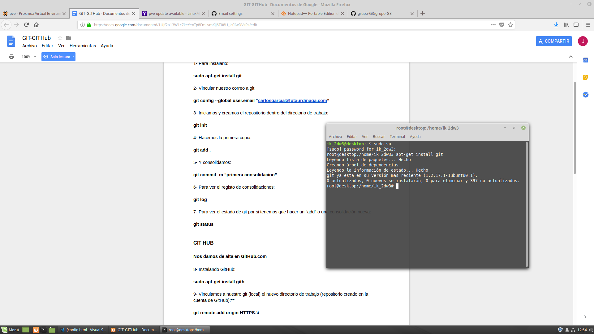
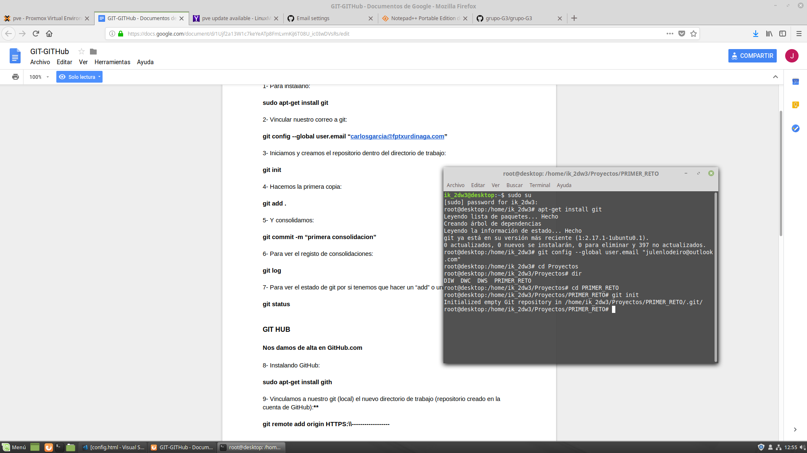
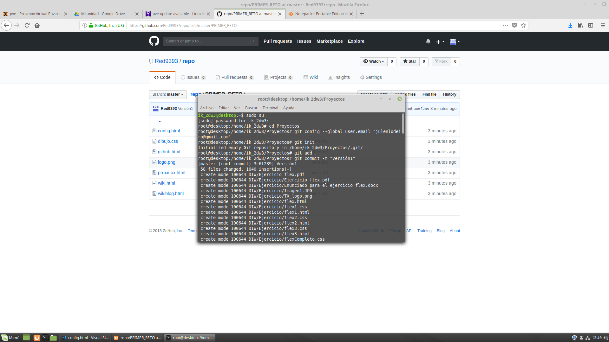
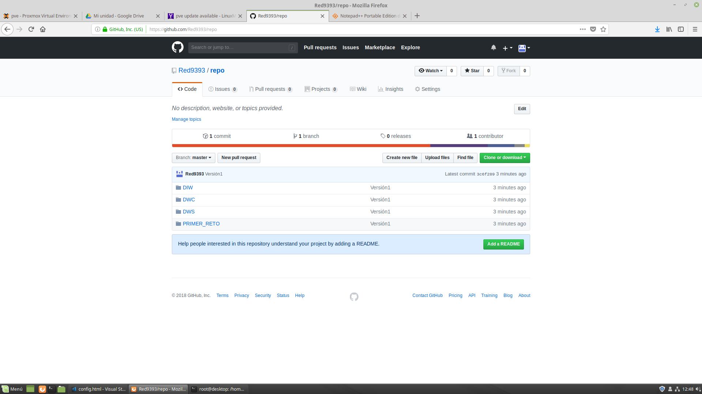
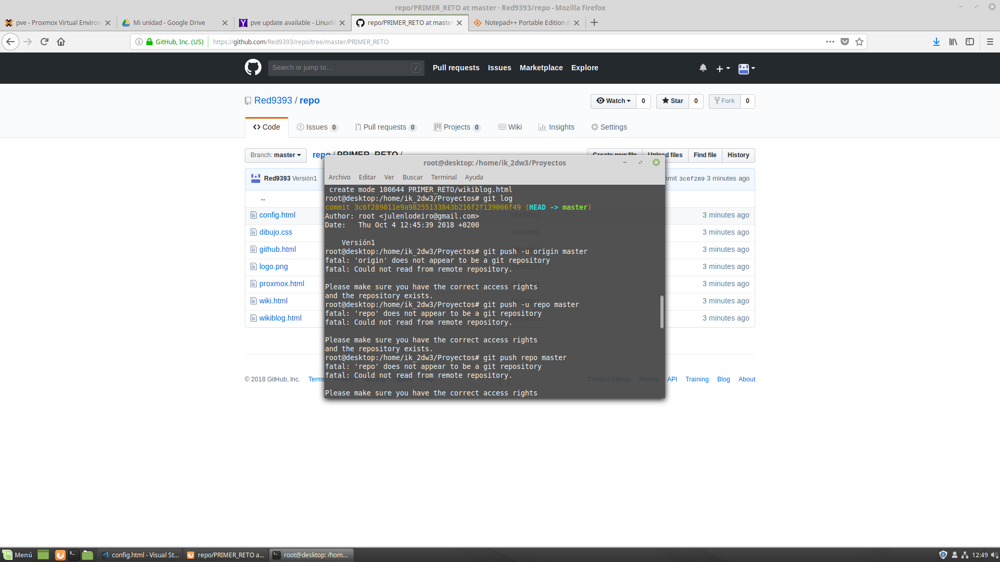
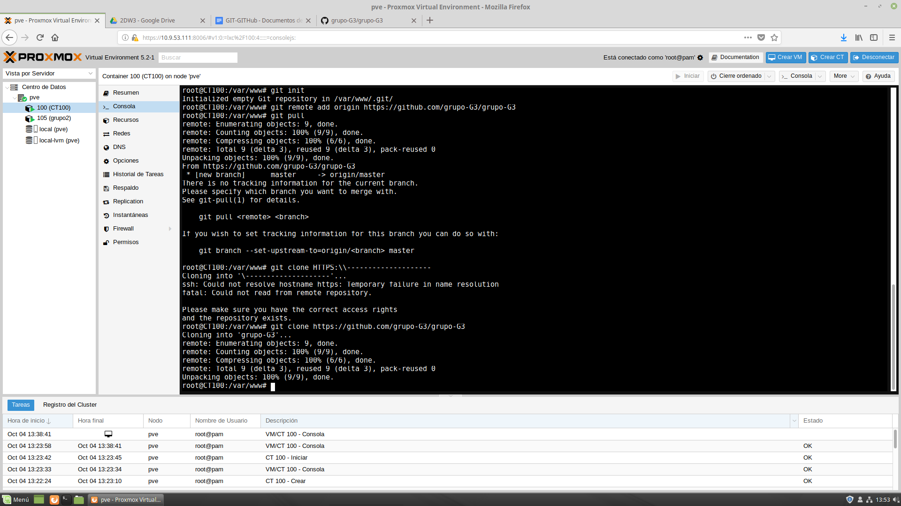

El primer paso es la instalacion del github, para ello escribimos en el terminal como root, sudo apt-get install git
Seguidamente vincularemos nuestro a GIT, para ello escribiremos en el terminal el comando, git config --global user.email"julenlodeiro@gmail.com"
Al tener vinculado nuestro GIT,iniciamos y crearemos un repositorio dentro del directorio de trabajo
Realizamos la primera copia, con el comando git add . Con especial atención en dejar un espacio después del add
Consolidamos la copia con el comando git commit -m "primera consolidacion"
Si queremos conocer el registro de consolidaciones que tenemos en el repositorio, escribiremos git log
Si queremos conocer el estado de git, por si tenemos que hacer un " add " o una consolidacion nueva git status
El siguiente paso es la instalación del GitHub, para ello tecleamos sudo apt-get install gith
Vinculacamos a nuestro git el nuevo directorio de trabajo git remote add origin HTTPS:\\-----------
Transladamos el proyecto de Git a GitHub git push -u origin master
Si deseamos recuperar un proyecto de GitHub git clone HTTPS:\\---------------
Pasar a GitHub modificaciones git push
Traer las modificaciones de otros compañeros, hecho el clone anteriormente git pull
Para recuperar un proyecto